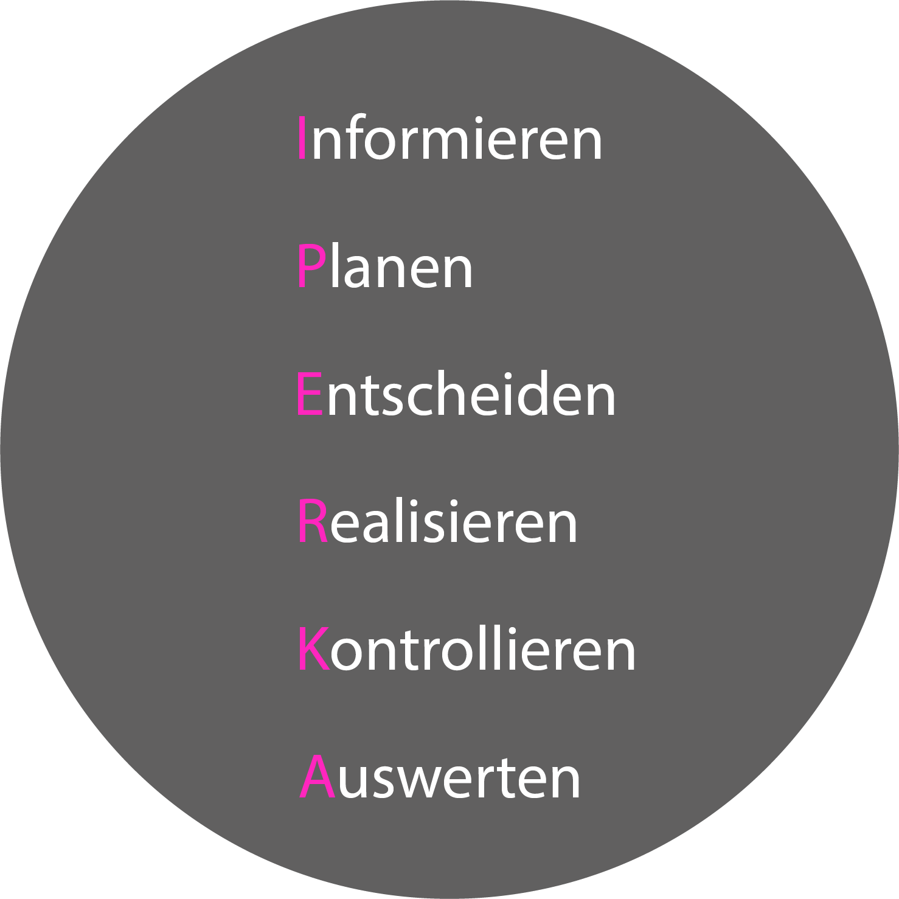
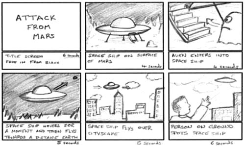
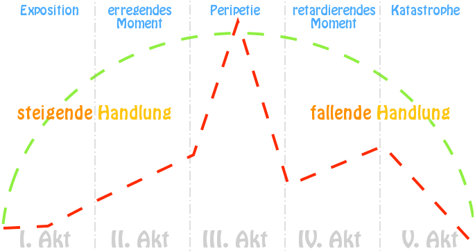

Projektmanagement
Das Konzept
Das Konzept besteht aus den in der Planung und im Marketing erarbeiteten Inhalten.
Enthalten sind prinzipiell die Marketinganalyse, die Strategie, der grobe Konzeptbeschrieb und
ein Zeitplan.
Zusätzlich werden die Mood- und Storyboards der erarbeiteten Ideen beigelegt.
Alle Inhalte werden anschliessend als Ganzes dem Kunden abgegeben, damit dieser sich einen Eindruck von Ihren
Überlegungen machen kann.
S.M.A.R.T.
Was ist eigentlich ein Ziel?
Oftmals werden Ziele gesetzt,
die eigentlich gar keine wirklichen Ziele sind und nur als solches dargestellt werden.
Die Gefahr bei solch "unkonkreten Zielen" liegt darin, dass die vage Formulierung zu Missverständnissen zwischen
Projektleiter und Auftraggeber führen kann.
Ein solch "falsches Ziel" könnte beispielsweise sein, ein Produkt mit möglichst geringem Kostenaufwand herzustellen.
Was jedoch unter geringen Kosten verstanden wird, ist nicht klar definiert und so kann es zu
Missverständnissen zwischen den Parteien kommen.
Doch wie kann nun ein "Ziel" richtig definiert werden?
Durch die S.M.A.R.T.-Methode!
Die fünf Buchstaben stehen für fünf Kriterien, die ein gutes Ziel erfüllen sollten.
Das "S" steht für Spezifisch. Das bedeutet, es sollte so konkret und genau wie
möglich formuliert sein und alle Voraussetzungen enthalten.
"M" für den Begriff Messbar, zeigt auf, dass eine Zeitangabe oder ein
anderes messbares Kriterium genannt werden muss. Anstatt "möglichst niedrige Kosten" sollte daher ein
konkretes Budget genannt werden.
Bei der Formulierung eines Ziels muss nicht nur darauf geachtet werden, dass es spezifisch und messbar
ist, es sollte ausserdem realistisch sein. Realistische Ziele werden
einfacher akzeptiert und motivieren die Mitarbeitenden stärker.
Eine weitere Voraussetzung für gutes ein "Ziel" ist, dass es von allen Beteiligten akzeptiert wird,
bevor bereits die ersten Schritte angegangen werden. Dies steht für den Buchstaben "A", wie Akzeptiert.
Des Weiteren muss der Auftrag terminiert sein, also ein begrenzter Zeitraum zur Verfügung gestellt werden.
Prüfen Sie anhand dieser Kriterien, ob ihr Ziel so umsetzbar ist und schaffen eine gute Basis für das Vorhaben.
IPERKA

IPERKA ist eine Sechs-Schritte-Methode, die dabei hilft, einen Auftrag oder ein Projekt
systematisch bearbeiten zu können.
Informieren
Das Informieren erfolgt durch ein Kundenbriefing, in welchem der Kunde seine konkreten
Vorstellungen preisgibt. Er schildert seine Wünsche und das Ziel des Projekts und gibt das zur Verfügung
stehende Budget und die die Dauer preis. Ebenfalls wird festgelegt, wer die Entscheidungen trifft und eine
Strategie besprochen.
Der Arbeitnehmer sollte darauf achten, dass beide Parteien dieselben Vorstellungen von
der Ausführung haben, auch wenn dies mehrere Besprechungen und tiefergehendes Nachfragen erfordert.
Ebenfalls Aufgabe des Arbeitnehmers ist, sich mit der Corporate Identity der Firma vertraut zu
machen, damit diese in das Konzept und Endprodukt eingebunden werden kann.
Planen
Nun geht es darum seine Kreativität in Form von Ideen festzuhalten und einen Plan auszuhecken,
der ins Budget passt.
Die Planung beinhaltet zum einen das Erstellen eines Story- und Moodboards, eines Grobkonzepts und
einer Marketinganalyse. Zum anderen stellt der Produzent Recherchen an, setzt eine Offerte auf
und erstellt einen groben Zeitplan.
In jenem werden alle durchzuführenden Schritte in ein Zeitraster eingepasst.
Entscheiden
Nachfolgend müssen Entscheidungen getroffen werden. Nachdem die zuvor erstellten Unterlagen dem
Kunden vorgestellt wurden,
kann gemeinsam die Entscheidung für eine Idee, beziehungsweise ein Storyboard, gefällt und das
Konzept nochmals überarbeitet werden. An dieser Stelle könnte ein Look&Feel, das Stimmungen und
Emotionen festhält, hilfreich sein und dem Kunden die Entscheidung erleichtern.
Anschliessend wird anhand dessen das Drehbuch geschrieben und der
Endgültige Zeitplan eingeteilt. Bei dem Erstellen des Zeitplans ist darauf zu achten, dass genug Puffer-Zeit einberechnet wurde,
da es immer zu unvorhergesehenen Problemen kommen kann, die keinen Einfluss auf den Abgabetermin
haben dürfen.
Realisieren
Sind die Vorarbeiten alle geleistet, kann mit der Umsetzung begonnen werden. Vom Erstellen der Rohdaten,
über den Schnitt und die Bearbeitung von Audio gehört alles dazu. Oftmals wird das Überprüfen von Rechten vernachlässigt.
Es ist von grosser Bedeutung, dass jeder Inhalt rechtlich problemlos für den geplanten
Zweck weiterverwendet werden darf.
Am Ende können Animationen das Projekt abrunden und perfektionieren.
Kontrollieren
Sind auf den ersten Blick alle Aufgaben erledigt, gehört es dazu, die Arbeit, bestenfalls anhand einer Checkliste, zu
kontrollieren.
Hier mögliche Punkte für die Checkliste:
- Treffen alle Anforderungen auf das Endprodukt zu?
- Erzielt das Endprodukt die gewünschte "Message"?
- Stimmt das Format und wurde das Video fehlerfrei gerendert?
- Stimmen Audio und Video verzögerungsfrei überein?
Wurden keine Fehler gefunden, kann das Video publiziert werden.
Auswerten
Zur letzten Phase gehört es dazu, sein Resultat vor dem Auftraggeber zu präsentieren.
Ungeachtet dessen kann es ebenfalls sehr nützlich sein, eine Selbstreflektion durchzuführen, um
beispielsweise Planungsfehler oder andere Probleme beim nächsten Auftrag verhindern zu können.
Moodboard/Look & Feel
Was ist ein Moodboard?
Eine gewisse Atmosphäre, Stimmung oder ein Gefühl zu beschreiben, kann zu einer grossen
Herausforderung werden. Aus diesem Grund werden Moodboards, eine
Art Collage aus Bildern, Texturen,
Typographien, Farbpaletten und beschreibenden Worten entworfen.
Auch hilft es, Ideen und Inspirationen für ein Projekt zu sammeln.
Wann wird es eingesetzt?
Häufig legt man das Moodboard schon sehr früh in der Designphase an, weil es
die Atmosphäre eines Films oder Produkts definiert und zeigt, welche Elemente miteinander
harmonieren und welche nicht. Es kann zudem als wertvolles
Präsentationsmedium vor dem Auftraggeber dienen, da dieser direkt ein Bild
von dem möglichen Endprodukt vor Augen hat.
Storyboard
Was ist ein Storyboard?
Ein Storyboard ein Plan für die Abfolge eines Films oder Videos.
Es ist sozusagen eine zeichnerische Version des Drehbuchs oder eine Visualisierung eines
Konzepts oder, genauer gesagt, einer Idee. Es zeigt auf, wie die festgehaltene Geschichte im
Drehbuch bildlich, also bei den Dreharbeiten, umgesetzt wird. Diese Bilder können ergänzt werden
durch eine kurze Beschreibung der Handlung.

Checkliste für ein gutes Storyboard:
- Helfen die Bilder beim Filmverständnis?
- Sind ergänzende Beschreibungen nötig und wenn ja, sind diese verständlich?
- Wird die Anforderung an das Filmbild verdeutlicht?
- Sind Einstellungsgrössen und Kameraperspektiven erkenntlich?
- Sind die gezeichneten Szenen in dieser Form umsetzbar?
- Ist die Reihenfolge der Bilder nummeriert?
- Halten sich die gezeichneten Szenen an das Drehbuch?
Spannungsbogen
Wieso benötigt meine Geschichte einen Spannungsbogen?

In einem Drehbuch bzw. Film sollten sich verschiedene Elemente bis zum Ende
oder Höhepunkt hin steigern, um die Aufmerksamkeit des Betrachters auf sich zu ziehen und
diese auch zu erhalten.
Spannungsbogen mithilfe einer Geschichte erklärt:
Zu Beginn des Spannungsbogens befindet sich die Ausgangsposition oder vielmehr die
"Einführung" in die Geschichte.
- Hase will Rüebli
Dann beginnt bereits eine Veränderung, die Figuren müssen aus ihrem gewohnten Trott ausbrechen und werden herausgefordert.
Dies kann auch "Störung" genannt werden.- Zauberer hat Stress und vergisst den Hasen zu füttern
Das erkennbare Ziel ist nicht leicht zu erreichen und das erzeugt folglich Spannung. Es findet hier die "Konfrontation", bei massiven Hindernissen auch "Plot Point" genannt, statt.
- Zauberer stürzt
Dann steuert der Film auf den Höhepunkt zu und die Figuren müssen die letzte und grösste Schwierigkeit bewältigen. Die Situation wird hier "aufgelöst".
- Hase rettet Zauberer
Alles, was danach kommt, sollte kurzgehalten werden, da die Spannung aufgelöst wurde.
- Publikum begeistert
- Fütterung
- Sind wieder Freunde
Hält man sich an dieses Vorgehen, kann eine aufregende Geschichte gelingen, bei welcher die Zuschauer mitfiebern.